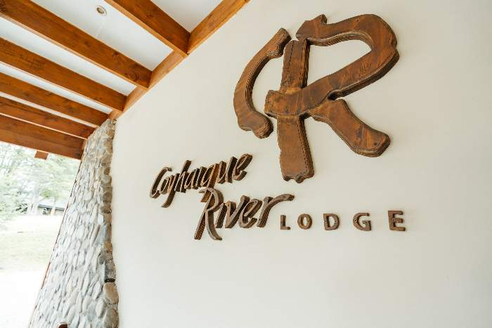
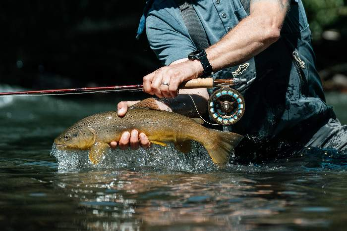
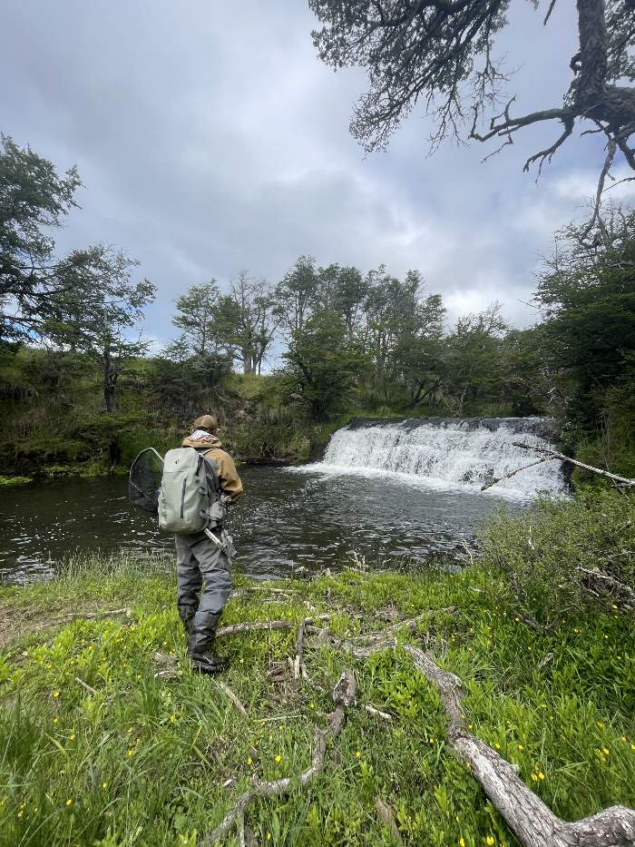
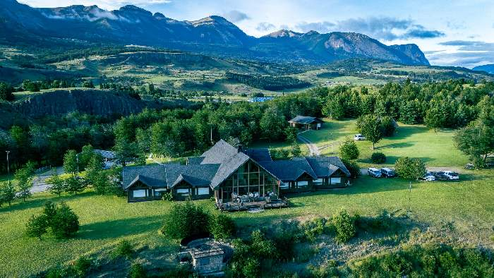
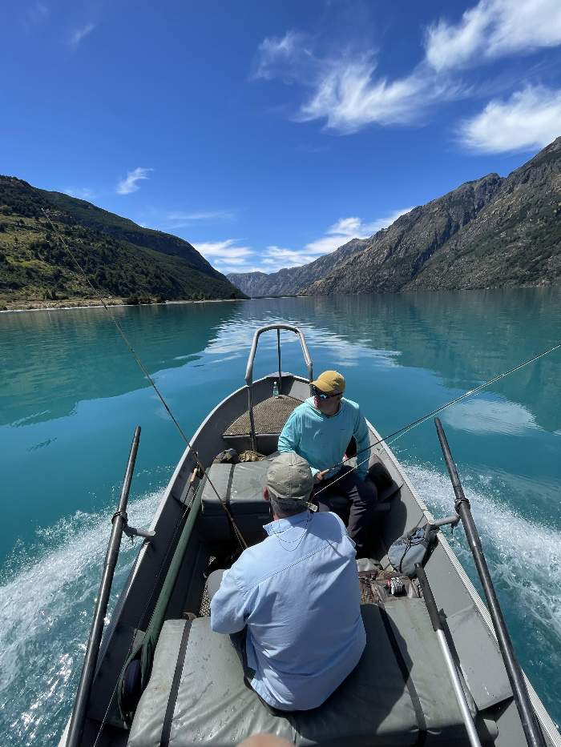

Lodge principal
Coyhaique River Lodge
[Description : capacité, style des chambres, emplacement exact au bord du río Coyhaique.]

Un lodge au bord du río Coyhaique : programmes tout inclus, guides bilingues, trois propriétés et cuisine de saison.
Trois propriétés en Aysén : le lodge principal, Las Ardillas et les cabañas de Puerto Sánchez.
Pêche à la mouche et multi-aventure avec des guides bilingues, sur les rivières, lacs et montagnes de la région.
Une cuisine de saison et une alimentation pensée pour les longues journées en plein air.
Niché sur 16 hectares (40 acres), à 8 km de Coyhaique et au bord du río Coyhaique, votre voyage se déploie dans un décor naturel splendide : un refuge pour les pêcheurs comme pour les amoureux de la nature.
Rencontrer l'équipe
Coyhaique River Lodge est né d'une conviction simple : la Patagonie se vit mieux de près, en prenant le temps, avec ceux qui connaissent ses rivières, ses forêts et ses saisons depuis des générations. Vingt ans plus tard, cette même conviction guide chaque saison, chaque itinéraire et chaque hôte venu chercher plus que des vacances.
[Espace réservé — jalons réels : année de fondation, évolution du lodge, moments clés, distinctions reçues.]
Chaque propriété a son caractère. Choisissez-en une, ou combinez-les dans un même voyage.

[Description : capacité, style des chambres, emplacement exact au bord du río Coyhaique.]

[Description : ce qui la distingue du lodge principal, capacité, type d'expérience.]

[Description : situation à Puerto Sánchez, type de cabañas, activités liées au lac.]
Choisissez un programme et consultez les dates disponibles. Nous construisons aussi des itinéraires sur mesure.
Trek, kayak, vélo, cheval et pêche dans un même voyage, avec des guides de montagne et de pêche.
Prix à confirmer
Demander ce programmeDes programmes dédiés aux rivières et lacs d'Aysén, avec des guides qui connaissent chaque passe.
Prix à confirmer
Demander ce programmeSéjours flexibles dans l'une de nos trois propriétés, en haute comme en basse saison.
Prix à confirmer
Demander ce programmeLes places sont limitées : nous accueillons au maximum 10 hôtes par semaine. Choisissez un départ et nous vous envoyons une proposition.
| Programme | Dates | Durée | Places | Statut | |
|---|---|---|---|---|---|
| Pêche à la mouche | 8–15 nov. 2026 | 7 nuits | 6 places | Disponible | Demander |
| Multi-aventure | 15–20 nov. 2026 | 5 nuits | 5 places | Disponible | Demander |
| Pêche à la mouche | 22–29 nov. 2026 | 7 nuits | 2 places | Dernières places | Demander |
| Pêche à la mouche | 6–13 déc. 2026 | 7 nuits | Aucune place | Complet | Liste d'attente |
| Multi-aventure | 13–20 déc. 2026 | 7 nuits | 1 place | Dernières places | Demander |
| Pêche à la mouche | 20–27 déc. 2026 | 7 nuits | 4 places | Disponible | Demander |
| Pêche à la mouche | 10–17 janv. 2027 | 7 nuits | 3 places | Disponible | Demander |
| Multi-aventure | 24–31 janv. 2027 | 7 nuits | 6 places | Disponible | Demander |
| Multi-aventure | 14–19 févr. 2027 | 5 nuits | 4 places | Disponible | Demander |
Hébergement et programmes sur mesure : indiquez-nous les dates souhaitées.
Chez CRL, la table fait partie du programme. Nous travaillons avec des produits de saison de la région d'Aysén, et chaque menu est pensé pour accompagner de longues journées en plein air : plats complets, bonne hydratation et en-cas pour la rivière, la montagne ou le lac.
Des ingrédients de la région et de la saison, cuisinés avec technique et sans artifice. [Nommer les producteurs et plats réels.]
Des petits-déjeuners qui tiennent, des déjeuners de terrain (pique-nique ou panier) et des en-cas pour garder énergie et concentration pendant des heures de pêche, de trek ou de cheval.
Végétarien, végan, sans gluten ou autres besoins : dites-le-nous à la réservation et nous l'intégrons au menu de votre séjour.
Le dîner clôt la journée : table partagée, vins chiliens et temps pour raconter la journée. [Valider la carte des boissons.]
Chaque sortie est encadrée par des guides bilingues forts de nombreuses années d'expérience sur les rivières et montagnes d'Aysén. [Remplacer par de vraies photos et biographies.]
[Courte bio — parcours, pourquoi il a fondé CRL, années dans la région.]
[Années d'expérience, rivières de prédilection, certifications.]
[Certifications de montagne, spécialité trek et cheval.]
[Formation, approche de la cuisine patagonne et de saison.]
[Remplacer par de vrais avis Google, TripAdvisor ou e-mails d'hôtes, avec leur accord.]
“[Vrai témoignage d'hôte.]”
“[Vrai témoignage — sur l'expérience de pêche ou les guides.]”
“[Vrai témoignage — sur le lodge ou la cuisine.]”
Nous répondons en espagnol, en anglais ou en français. Si vous avez repéré un départ disponible plus haut, choisissez-le et le formulaire se remplit tout seul.